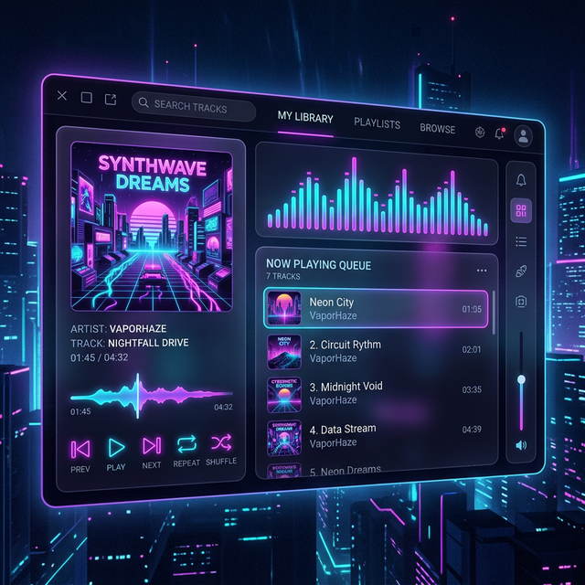
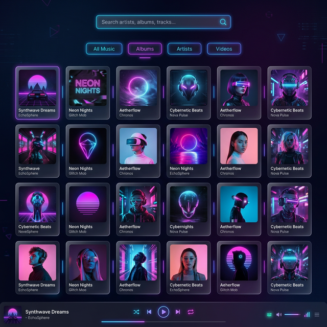

Você lembra da época de ouro dos Media Players locais? Nós trouxemos ela de volta. Com temas customizáveis, performance absurda e integração com o YouTube em uma única interface premium para Desktop.

Assista em ação. Integração de mídia local, reprodução do YouTube em tempo real e interface fluída.
Desenhado para entusiastas de música e power users. Conheça as armas do BlackBird.
Importação recursiva de pastas, extração automática de tags ID3, busca de capas de álbuns e YouTube Integrado via oEmbed com sincronismo real no player local.
Navegue de forma massiva com filtros avançados sobre artistas, álbuns e descrições. Suas marcações de favoritos processadas instantaneamente através de nossa arquitetura de bus.
Universal Player Queue: toque desde FLAC altíssima qualidade a músicas pinçadas do YouTube em massa na mesma fila perfeitamente unificada. Multi-seleção total nativa.
Enjoado dos mesmos visuais? Suporte total a temas JSON carregados a quente. Construa e compartilhe esquemas como o famoso tema "Cyberpunk". Exportação total (*Data Safe*) em um clique.
Sobrescreva títulos, gêneros e faça upload instantâneo de imagens .JPG de capas que você curte. Controle total sobre a metadata em segundos.
Milhares de faixas lidas num piscar de olhos. Sem travamentos e listagens infinitas sem engasgos.

Construído em Electron & Vite. Movido pelo poderoso banco de dados transacional e síncrono SQLite V3 nativo (better-sqlite3), garantindo queries instantâneas.
Rodando interface puramente Vanilla em Typescript e CSS moderno, varrendo gargalos que os frameworks de front-end trariam, atingindo o máximo de velocidade, com o mínimo de latência processando mídias.